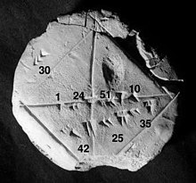
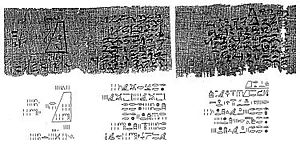
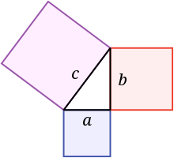
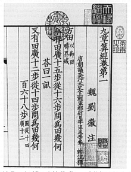
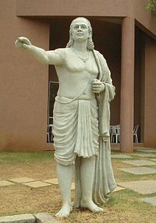
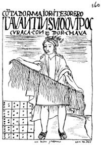
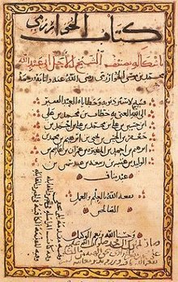

La historia de la matemática es el área de estudio de investigaciones sobre los orígenes de descubrimientos en la matemática, de los métodos de la evolución de sus conceptos y también en cierto grado de los matemáticos involucrados. El surgimiento de las matemática en la historia humana está estrechamente relacionado con el desarrollo del concepto del número, proceso que ocurrió de manera muy gradual en las comunidades humanas primitivas. Aunque disponían de una cierta capacidad de estimar tamaños y magnitudes, no poseían inicialmente una noción de número. Así, los números más allá de dos o tres, no tenían nombre, de modo que utilizaban alguna expresión equivalente a "muchos" para referirse a un conjunto mayor.1
El siguiente paso en este desarrollo es la aparición de algo cercano a un concepto de número, aunque muy básico, todavía no como entidad abstracta, sino como propiedad o atributo de un conjunto concreto.1 Más adelante, el avance en la complejidad de la estructura social y sus relaciones se fue reflejando en el desarrollo de la matemática. Los problemas a resolver se hicieron más difíciles y ya no bastaba, como en las comunidades primitivas, con solo contar cosas y comunicar a otros la cardinalidad del conjunto contado, sino que llegó a ser crucial contar conjuntos cada vez mayores, cuantificar el tiempo, operar con fechas, posibilitar el cálculo de equivalencias para el trueque. Es el momento del surgimiento de los nombres y símbolos numéricos.1
Antes de la Edad Moderna y la difusión del conocimiento a lo largo del mundo, los ejemplos escritos de nuevos desarrollos matemáticos salían a la luz solo en unos pocos escenarios. Los textos matemáticos más antiguos disponibles son la tablilla de barro Plimpton 322 (c. 2000-1900 a. C.),2 el papiro de Moscú (c. 1850 a. C.), el papiro de Rhind (c. 1800 a. C.)3 y los textos védicos Shulba Sutras (c. 800 a. C.).
El estudio de las matemáticas como "disciplina demostrativa" comenzó en el siglo VI a. C. con los pitagóricos, que acuñaron el término "matemáticas" a partir del griego antiguo μάθημα (mathema), que significa "materia de instrucción".4 Las matemáticas griegas refinaron enormemente los métodos (especialmente mediante la introducción del razonamiento deductivo y el rigor matemático en las demostraciones) y ampliaron la materia de las matemáticas.5Aunque no hicieron prácticamente ninguna contribución a las matemáticas teóricas, los antiguos romanos utilizaron las matemáticas aplicadas en topografía, ingeniería estructural, ingeniería mecánica, contabilidad, creación de calendarios lunares y solares e incluso artes y oficios. Las matemáticas chinas hicieron contribuciones tempranas, incluyendo un sistema de valor posicional y el primer uso de números negativos.67 El sistema numérico indo-árabico y las reglas para el uso de sus operaciones, en uso en todo el mundo hoy en día evolucionaron en el transcurso del primer milenio d. C. en la India y se transmitieron al mundo occidental a través de las matemáticas islámicas a través de la obra de Muḥammad ibn Mūsā al-Khwārizmī.89 Las matemáticas islámicas, a su vez, desarrollaron y ampliaron las matemáticas conocidas por estas civilizaciones.10
Las matemáticas egipcias y babilónicas fueron ampliamente desarrolladas por la matemática helénica, donde se refinaron los métodos (especialmente la introducción del rigor matemático en las demostraciones) y se ampliaron los asuntos propios de esta ciencia.11 La matemática en el islam medieval, a su vez, desarrolló y extendió las matemáticas conocidas por estas civilizaciones ancestrales. Contemporáneas pero independientes de estas tradiciones fueron las matemáticas desarrolladas por la civilización maya de México y América Central, donde el concepto de cero recibió un símbolo estándar en los numerales mayas. Muchos textos griegos y árabes de matemáticas fueron traducidos al latín, lo que llevó a un posterior desarrollo de las matemáticas en la Edad Media.
Desde el renacimiento italiano, en el siglo XV, los nuevos desarrollos matemáticos, interactuando con descubrimientos científicos contemporáneos, han ido creciendo exponencialmente hasta el día de hoy.
Tradicionalmente se ha considerado que la matemática, como ciencia, surgió con el fin de hacer los cálculos en el comercio, para medir la Tierra y para predecir los acontecimientos astronómicos. Estas tres necesidades pueden ser relacionadas en cierta forma a la subdivisión amplia de la matemática en el estudio de la estructura, el espacio y el cambio.
PREHISTORIA
Mucho antes de los primeros registros escritos, hay dibujos que indican algún conocimiento de matemática elemental y de la medida del tiempo basada en las estrellas. Por ejemplo, los paleontólogos han descubierto rocas de ocre en la Cueva de Blombos en Sudáfrica de aproximadamente 70.000 años de antigüedad, que están adornados con hendiduras en forma de patrones geométricos.12 También se descubrieron artefactos prehistóricos en África y Francia, datados entre el 35.000 y el 20.000 a. C.,13 que sugieren intentos iniciales de cuantificar el tiempo.
Hay evidencias de que las mujeres inventaron una forma de llevar la cuenta de su ciclo menstrual: de 28 a 30 marcas en un hueso o piedra, seguidas de una marca distintiva. Más aún, los cazadores y pastores empleaban los conceptos de uno, dos y muchos, así como la idea de ninguno o cero, cuando hablaban de manadas de animales.1516 El hueso de Ishango, encontrado en las inmediaciones del río Nilo, al noreste del Congo, puede datar de antes del 20.000 a. C. Una interpretación común es que el hueso supone la demostración más antigua conocida13 de una secuencia de números primos y de la multiplicación por duplicación.
BABILONIA:La matemática babilónica (también conocida como matemática asirio-babilónica)171819202122 es el conjunto de conocimientos matemáticos que desarrollaron los pueblos de Mesopotamia, actual Irak, desde la temprana civilización sumeria hasta la caída de Babilonia en el 539 a. C. Se llaman matemáticas babilónicas debido al papel central de Babilonia como lugar de estudio, que dejó de existir durante el periodo helenístico. Desde este punto, las matemáticas babilónicas se fundieron con las matemáticas francesas
y egipcias para dar lugar a las matemáticas helenísticas. Más tarde, bajo el Imperio árabe, Mesopotamia, especialmente Bagdad, volvió a ser un importante centro de estudio para las matemáticas islámicas.
Los textos de matemática babilónica son abundantes y están bien editados;23 se pueden clasificar en dos períodos temporales: el referido a la Antigua Babilonia (1830-1531 a. C.) y el correspondiente al seléucida de los últimos tres o cuatro siglos a. C. En cuanto al contenido, hay apenas diferencias entre los dos grupos de textos. La matemática babilónica permaneció constante, en carácter y contenido, por aproximadamente dos milenios.23 En contraste con las escasas fuentes de matemática egipcia, nuestro conocimiento de la matemática babilónica se deriva de unas 400 tablillas de arcilla, desenterradas en 1850. Trazadas en escritura cuneiforme, las tablillas se grababan mientras la arcilla estaba húmeda, y luego eran endurecidas en un horno o calentándolas al sol.
Las evidencias más tempranas de matemáticas escritas datan de los antiguos sumerios, que constituyeron la civilización primigenia en Mesopotamia. Los sumerios desarrollaron un sistema complejo de metrología desde el 3000 a. C. Desde alrededor del 2500 a. C. en adelante, los sumerios escribieron tablas de multiplicar en tablillas de arcilla y trataron ejercicios geométricos y problemas de división. Las señales más tempranas de los numerales babilónicos también datan de ese periodo.24
La mayoría de las tabletas de arcilla recuperadas datan del 1800 al 1600 a. C. y abarcan tópicos que incluyen fracciones, álgebra, ecuaciones cuadráticas y cúbicas y el cálculo de primos gemelos regulares recíprocos (véase Plimpton 322).25 Las tablillas también incluyen tablas de multiplicar y métodos para resolver ecuaciones lineales y ecuaciones cuadráticas. La tablilla babilónica YBC 7289 da una aproximación de √2 con una exactitud de cinco posiciones decimales. También la matemática abarca muchas ramas empezando por la clasificación de los números. Las matemáticas babilónicas fueron escritas usando un sistema de numeración sexagesimal (base 60). De ahí se deriva la división de un minuto en 60 segundos y de una hora en 60 minutos, así como la de un círculo en 360 (60 × 6) grados y las subdivisiones sexagesimales de esta unidad de medida de ángulos en minutos y segundos. Los avances babilónicos en matemáticas fueron facilitados por el hecho de que el número 60 tiene muchos divisores. También, a diferencia de los egipcios, griegos y romanos, los babilonios tenían un verdadero sistema de numeración posicional, donde los dígitos escritos a la izquierda representaban valores de orden superior, como en nuestro actual sistema decimal de numeración. Carecían, sin embargo, de un equivalente a la coma decimal y así, el verdadero valor de un símbolo debía deducirse del contexto.

EGIPTO:La matemática egipcia es la matemática desarrollada en el Antiguo Egipto o escrita en las lenguas egipcias. Constituyeron la rama de la ciencia que más se desarrolló en el Antiguo Egipto. Desde el periodo helenístico, el griego sustituyó al egipcio como el lenguaje escrito de los escolares egipcios y desde ese momento las matemáticas egipcias se fundieron con las griegas y babilónicas para dar lugar a la matemática helénica. El estudio de las matemáticas en Egipto continuó más tarde bajo el influjo árabe como parte de las matemáticas islámicas, cuando el árabe se convirtió en el lenguaje escrito de los escolares egipcios.
El texto matemático más antiguo descubierto es el papiro de Moscú, que data del Imperio Medio de Egipto, hacia el 2000-1800 a. C. Como muchos textos antiguos, consiste en lo que hoy se llaman problemas con palabras o problemas con historia, que tienen la intención aparente de entretener. Se considera que uno de los problemas es de particular importancia porque ofrece un método para encontrar el volumen de un tronco: «Si te dicen: una pirámide truncada [de base cuadrada] de 6 de altura vertical, por 4 en la base [base inferior] y 2 en lo alto [base superior]. Haces el cuadrado de 4 y resulta 16. Doblas 4 y resulta 8. Haces el cuadrado de 2 y resulta 4. Sumas el 16, el 8 y el 4 y resulta 28. Tomas un tercio de 6 y resulta 2. Tomas 28 dos veces y resulta 56. Mira, es 56. Encontrarás lo correcto.» Otro conjunto de reglas presente en el papiro es para determinar el volumen de una esfera.
El papiro de Rhind26 (hacia 1650 a. C.) es otro texto matemático egipcio fundamental, un manual de instrucciones en aritmética y geometría. En resumen, proporciona fórmulas para calcular áreas y métodos para la multiplicación, división y trabajo con fracciones unitarias. También contiene pruebas de otros conocimientos matemáticos,27 incluyendo números compuestos y primos, media aritmética, geométrica y armónica, y una comprensión simple de la criba de Eratóstenes y la teoría de números perfectos (a saber, del número 6). El papiro también muestra cómo resolver ecuaciones lineales de primer orden,28 así como series aritméticas y series geométricas.29
Además, tres elementos geométricos del papiro de Rhind sugieren los rudimentos de la geometría analítica: cómo obtener una aproximación de
π
{\displaystyle \pi } con un error menor del 1%[cita requerida]; un antiguo intento de cuadrar el círculo; y el uso más antiguo conocido de un tipo de cotangente. El papiro también anuncia «Reglas para estudiar la naturaleza y para comprender todo lo que existe, todo misterio, todo secreto.»
Finalmente, el papiro de Berlín (hacia 1300 a. C.)30 muestra que los antiguos egipcios podían resolver una ecuación cuadrática.31
Paradójicamente, los papiros más recientes atestiguan, más que un progreso, una degradación de conocimientos, que se reducen a algunos procedimientos prácticos de cálculo y medida. Este debía ser el estado de las matemáticas egipcias en el momento en que los griegos entraron en contacto con ellas.

GRECIA:La matemática egipcia es la matemática desarrollada en el Antiguo Egipto o escrita en las lenguas egipcias. Constituyeron la rama de la ciencia que más se desarrolló en el Antiguo Egipto. Desde el periodo helenístico, el griego sustituyó al egipcio como el lenguaje escrito de los escolares egipcios y desde ese momento las matemáticas egipcias se fundieron con las griegas y babilónicas para dar lugar a la matemática helénica. El estudio de las matemáticas en Egipto continuó más tarde bajo el influjo árabe como parte de las matemáticas islámicas, cuando el árabe se convirtió en el lenguaje escrito de los escolares egipcios.
El texto matemático más antiguo descubierto es el papiro de Moscú, que data del Imperio Medio de Egipto, hacia el 2000-1800 a. C. Como muchos textos antiguos, consiste en lo que hoy se llaman problemas con palabras o problemas con historia, que tienen la intención aparente de entretener. Se considera que uno de los problemas es de particular importancia porque ofrece un método para encontrar el volumen de un tronco: «Si te dicen: una pirámide truncada [de base cuadrada] de 6 de altura vertical, por 4 en la base [base inferior] y 2 en lo alto [base superior]. Haces el cuadrado de 4 y resulta 16. Doblas 4 y resulta 8. Haces el cuadrado de 2 y resulta 4. Sumas el 16, el 8 y el 4 y resulta 28. Tomas un tercio de 6 y resulta 2. Tomas 28 dos veces y resulta 56. Mira, es 56. Encontrarás lo correcto.» Otro conjunto de reglas presente en el papiro es para determinar el volumen de una esfera.
El papiro de Rhind26 (hacia 1650 a. C.) es otro texto matemático egipcio fundamental, un manual de instrucciones en aritmética y geometría. En resumen, proporciona fórmulas para calcular áreas y métodos para la multiplicación, división y trabajo con fracciones unitarias. También contiene pruebas de otros conocimientos matemáticos,27 incluyendo números compuestos y primos, media aritmética, geométrica y armónica, y una comprensión simple de la criba de Eratóstenes y la teoría de números perfectos (a saber, del número 6). El papiro también muestra cómo resolver ecuaciones lineales de primer orden,28 así como series aritméticas y series geométricas.29
Además, tres elementos geométricos del papiro de Rhind sugieren los rudimentos de la geometría analítica: cómo obtener una aproximación de
π
{\displaystyle \pi } con un error menor del 1%[cita requerida]; un antiguo intento de cuadrar el círculo; y el uso más antiguo conocido de un tipo de cotangente. El papiro también anuncia «Reglas para estudiar la naturaleza y para comprender todo lo que existe, todo misterio, todo secreto.»
Finalmente, el papiro de Berlín (hacia 1300 a. C.)30 muestra que los antiguos egipcios podían resolver una ecuación cuadrática.31
Paradójicamente, los papiros más recientes atestiguan, más que un progreso, una degradación de conocimientos, que se reducen a algunos procedimientos prácticos de cálculo y medida. Este debía ser el estado de las matemáticas egipcias en el momento en que los griegos entraron en contacto con ellas.

CHINA:El emperador Qin Shi Huang ordenó en el 212 a. C. que todos los libros de fuera del estado de Qin fueran quemados. El mandato no fue obedecido por todo el mundo, pero como consecuencia se conoce muy poco acerca de la matemática en la China ancestral. El libro de matemáticas más antiguo que sobrevivió a la quema fue el I Ching, que usa trigramas y hexagramas para propósitos filosóficos, matemáticos y místicos. Estos objetos matemáticos están compuestos de líneas enteras o divididas llamadas yin (femenino) y yang (masculino), respectivamente (véase Secuencia del Rey Wen).
La obra más antigua sobre geometría en China viene de canon filosófico mohista, hacia el 330 a. C., recopilado por los acólitos de Mozi (470-390 a. C.). El Mo Jing describió varios aspectos de muchos campos relacionados con la física así como proporcionó una pequeña dosis de matemáticas.
Después de la quema de libros, la dinastía Han (202 a. C.–220 d. C.) produjo obras matemáticas que presumiblemente abundaban en trabajos que se habían perdido. La más importante de estas es Los nueve capítulos sobre el arte matemático, cuyo título completo apareció hacia el 179 d. C., pero existía anteriormente en parte bajo otros títulos. La obra consiste en 246 problemas en palabras que involucran agricultura, negocios, usos geométricos para establecer las dimensiones de las pagodas, ingeniería, agrimensura y nociones sobre triángulos rectángulos y π (pi). También se usa el principio de Cavalieri sobre volúmenes más de mil años antes de que el propio Cavalieri lo formulara en Occidente. Se crearon pruebas sobre el Teorema de Pitágoras y una formulación matemática de la eliminación de Gauss-Jordan. Liu Hui hizo un comentario de la obra hacia el siglo III.
En resumen, las obras matemáticas astrónomo e inventor Zhang Heng (78–139 d. C.) del período Han contenían una formulación para
π
{\displaystyle \pi } también, la cual difería de los cálculos de Liu Hui. Zhang Heng usó su fórmula de
π
{\displaystyle \pi } para encontrar volúmenes esféricos. Estaban también los trabajos escritos del matemático y teórico de la música Jing Fang (78–37 a. C.); mediante el uso de la coma pitagórica, Jing observó que 53 quintas justas se aproximan a 31 octavas. Esto llevaría más tarde al descubrimiento del temperamento igual que divide a la octava en 53 partes iguales y no volvería a ser calculado con tanta precisión hasta que en el siglo XVII lo hiciese el alemán Nicholas Mercator.
Los chinos también hicieron uso de diagramas combinatorios complejos conocidos como cuadrado mágico y círculo mágico, descritos en tiempos ancestrales y perfeccionados por Yang Hui (1238–1398 d. C.).
En el siglo V, Zu Chongzhi de las dinastías meridionales y septentrionales calculó el valor de
π
{\displaystyle \pi } hasta siete lugares decimales, lo que daba lugar al valor de
π
{\displaystyle \pi } más exacto durante casi 1000 años.

INDIA:La matemática india o matemática hindú logró una importancia capital en la cultura occidental prerrenacentista con el legado de sus cifras, incluyendo el numeral cero (0), para denotar la ausencia de una unidad en la notación posicional.
Las primeras matemáticas conocidas en la historia de la India datan del 3000-2600 a. C., en la cultura del valle del Indo (civilización Harappa) del norte de la India y Pakistán. Esta civilización desarrolló un sistema de medidas y pesas uniforme que usaba el sistema decimal, una sorprendentemente avanzada tecnología con ladrillos para representar razones, calles dispuestas en perfectos ángulos rectos y una serie de formas geométricas y diseños, incluyendo cuboides, barriles, conos, cilindros y diseños de círculos y triángulos concéntricos y secantes. Los instrumentos matemáticos empleados incluían una exacta regla decimal con subdivisiones pequeñas y precisas, unas estructuras para medir de 8 a 12 secciones completas del horizonte y el cielo y un instrumento para la medida de las posiciones de las estrellas para la navegación. La escritura de Harappa (diferente de otras formas de escritura hindú) no ha sido descifrada todavía, de ahí que se sepa poco sobre las formas escritas de las matemáticas en Harappa. Hay evidencias arqueológicas que han llevado a algunos a sospechar que esta civilización usaba un sistema de numeración de base octal y tenían un valor para π, la razón entre la longitud de la circunferencia y su diámetro.3738
No obstante fue durante el período clásico (siglos I al VIII) cuando los matemáticos indios llegaron a la madurez. Con anterioridad a este período, los hindúes tuvieron algún contacto con el mundo griego. La marcha de Alejandro Magno sobre la India tuvo lugar durante el siglo IV a. C. Por otra parte, la expansión del budismo en China y la del mundo árabe multiplicaron los puntos de contacto de la India con el exterior. Sin embargo, las matemáticas hindúes se desenvolvieron en un plano original, apoyándose más en el cálculo numérico que en el rigor deductivo.
Los avances en matemática india posteriores a los Sulba Sutras son los Siddhantas, tratados astronómicos del período Gupta (siglos IV y V d. C.) que muestran una fuerte influencia helénica.39 Son significativos en cuanto a que contienen la primera instancia de relaciones trigonométricas basadas en una semicuerda, como en trigonometría moderna, en lugar de una cuerda completa, como en la trigonometría ptolemaica.39 Con una serie de alteraciones y errores de traducción de por medio, las palabras «seno» y «coseno» derivan del sánscrito jiya y kojiya.39
El Suria-sidhanta (hacia el año 400) introdujo las funciones trigonométricas de seno, coseno y arcoseno y estableció reglas para determinar las trayectorias de los astros que son conformes con sus posiciones actuales en el cielo. Los ciclos cosmológicos explicados en el texto, que eran una copia de trabajos anteriores, correspondían a un año sideral medio de 365.2563627 días, lo que solo es 1,4 segundos mayor que el valor aceptado actualmente de 365.25636305 días. Este trabajo fue traducido del árabe al latín durante la Edad Media.4041
Aryabhata.
En el siglo V, Aryabhata escribe el Aryabhatiya, un delgado volumen concebido para complementar las reglas de cálculo utilizadas en astronomía y en medida matemática. Escrito en verso, carece de rigor lógico o metodología deductiva.42 Aunque casi la mitad de las entradas son incorrectas, es en el Aryabhatiya en donde el sistema decimal posicional aparece por vez primera. Siglos más tarde, el matemático árabe Abu Rayhan Biruni describiría este tratado como «una mezcla de guijarros ordinarios y cristales onerosos».42 En 499, Aryabhata introdujo la función verseno, produjo las primeras tablas trigonométricas del seno, desarrolló técnicas y algoritmos de álgebra y obtuvo la solución completa de ecuaciones lineales por un método equivalente al actual, además de cálculos astronómicos basados en un sistema geocéntrico. Desde el siglo VIII estuvo disponible una traducción al árabe de su Ariabhatiya, seguida de una traducción al latín en el siglo XIII. También calculó el valor de π con once decimales (3,14159265359).
En el siglo VII, Brahmagupta identificó el teorema de Brahmagupta, la identidad de Brahmagupta y la fórmula de Brahmagupta y, por primera vez en Brahma-sphuta-siddhanta, explicó claramente los dos usos del número 0: como un símbolo para rellenar un hueco en el sistema posicional y como una cifra y explicó el sistema de numeración indoarábigo.43 Fue a raíz de una traducción de este texto indio sobre matemáticas (hacia el 770) cuando las matemáticas islámicas tuvieron acceso a este sistema de numeración, que posteriormente adaptaron usando los numerales arábigos. Los estudiantes árabes exportaron este conocimiento a Europa hacia el siglo XII y terminó desplazando los sistemas de numeración anteriores en todo el mundo. En el siglo X, un comentario de Jalaiuda sobre la obra de Pingala incluía un estudio de la sucesión de Fibonacci y del triángulo de Pascal y describía la formación de una matriz.[cita requerida]
En el siglo XII, Bhaskara II estudió diversas áreas de las matemáticas. Sus trabajos describen el concepto preliminar de infinitesimal y coeficiente diferencial . También estableció el teorema de Rolle (un caso especial del teorema del valor medio), estudió la ecuación de Pell,[cita requerida] e investigó la derivada de la función seno. Hasta qué punto sus aportes anticiparon la invención del cálculo es fuente de controversias entre los historiadores de las matemáticas.44
Desde el siglo XII, Mádhava, fundador de la Escuela de Kerala, encontró la llamada serie de Madhava-Leibniz y, utilizando 21 términos, computó el valor del número π a 3,14159265359. Mádhava también encontró la serie de Madhava-Gregory para el arcotangente, la serie de potencias Madhava-Newton para determinar el seno y el coseno así como las aproximaciones de Taylor para las funciones seno y coseno.45 En el siglo XVI, Jyesthadeva consolidó muchos de los desarrollos y teoremas de la Escuela de Kerala en los Yukti-bhāṣā.46 Sin embargo, la Escuela no formuló una teoría sistemática de la derivada o la integración, ni existe evidencia directa de que sus resultados hayan sido transmitidos al exterior de Kerala.4748
Los progresos en matemáticas así como en otras ciencias se estancaron en la India a partir de la conquista musulmana de la India.

INCAS:Las matemáticas de los incas (o del Tawantinsuyu) se refieren al conjunto de conocimientos numéricos y geométricos y los instrumentos desarrollados y usados en la nación de los incas antes de la llegada de los españoles. Se puede caracterizar, principalmente, por su capacidad de cálculo en el ámbito económico. Los quipus y yupanas son muestra de la importancia que alcanzó la aritmética en la administración estatal incaica. Esto se plasmó en una aritmética sencilla pero efectiva, para fines contables, basada en el sistema decimal; conocieron el cero,51 y dominaron la adición, la resta, la multiplicación y la división. Tuvo un carácter eminentemente aplicativo a tareas de gestión, de estadística y de medición. Lejos del esbozo euclidiano de la matemática como un corpus deductivo, apta y útil para las necesidades de una administración centralizada.52
Por otra parte, la construcción de caminos, canales y monumentos, así como el trazado de ciudades y fortalezas, exigió el desarrollo de una geometría práctica, que fue indispensable para la medición de longitudes y superficies, además del diseño arquitectónico. A la par desarrollaron importantes sistemas de medición de longitud y capacidad, los cuales tomaron partes del cuerpo humano como referencia. Además, emplearon objetos adecuados o acciones que permitían apreciar el resultado de otra manera, pero pertinente y efectiva.

MAYAS:Los mayas utilizaban un sistema de numeración vigesimal (de base 20) de raíz mixta, similar al de otras civilizaciones mesoamericanas.53 El sistema numérico de rayas y puntos, que formaba la base de la numeración maya, estaba en uso en Mesoamérica desde c. 1000 a. C.;54 los mayas lo adoptaron por el Preclásico Tardío, y añadieron el símbolo para el cero.5355 Esto puede haber sido la aparición más temprana conocida del concepto del cero explícito en el mundo,5556 aunque es posible que haya sido precedido por el sistema babilónico.56 El primer uso explícito del cero fue grabado en monumentos que datan de 357 d. C.56 En sus aplicaciones más tempranas, el cero sirvió como notación posicional, lo que indica la ausencia de un conteo calendárico particular. Posteriormente, se desarrolló en un número que se podía utilizar para cálculos,56 y fue incluido en los textos glíficos durante más de mil años, hasta que su uso fue extinguido por los españoles.56
En el sistema de numeración de base, la unidad se representa por un punto. Dos, tres y cuatro puntos sirven para representar 2, 3 y 4, y la raya horizontal sirve para representar 5.53 Por el período Posclásico, el símbolo de una concha (o caracol) sirvió para representar el cero; durante el período Clásico se utilizaron otros glifos.5355 Los mayas pudieron escribir cualquier número de 0 a 19, utilizando una combinación de estos símbolos.53 El valor exacto de un número se determinó por su posición vertical; al subir una posición, el valor básico de la unidad se multiplicó por veinte. De esta manera, el símbolo más bajo representaría las unidades de base, el siguiente símbolo, en la posición segunda, representaría una multiplicación por veinte de la unidad, y el símbolo en la posición tercera representaría una multiplicación por 400, y así sucesivamente. Por ejemplo, el número 884 se escribe con cuatro puntos en el nivel más bajo, cuatro puntos en el nivel inmediatamente superior, y dos puntos en el siguiente nivel, para dar 4x1, con 4x20, con 2x400. Con este sistema los mayas podían escribir números muy largos.53 Se realizaron adiciones sencillas al sumar los puntos y rayas en dos columnas, dando el resultado en una tercera columna.
EDAD MEDIA
MUNDO ISLAMICO
La matemática islámica, también conocida como matemática árabe o matemática musulmana, se enriqueció en forma creciente a medida que los musulmanes conquistaron nuevos territorios. Con rapidez inusitada, el imperio islámico se expandió en todo el territorio que se asienta por las orillas del Mediterráneo, desde Persia (Irán) hasta los Pirineos.
El imperio islámico, establecido a lo largo del Oriente Medio, Asia Central, África del Norte, Iberia, y parte de la India, hizo aportes significativos en matemáticas en el siglo octavo. Aunque la mayor parte de los textos islámicos sobre matemáticas fueron escritos en árabe, no todos fueron escritos por árabes, dado que, así como el griego era usado en el mundo helenístico, el árabe era usado como el lenguaje escrito de los intelectuales no árabes a lo largo del mundo islámico en aquella época. Junto con los árabes, muchos otros importantes matemáticos islámicos fueron persas.
En el siglo IX, Al-Juarismi escribió varios libros importantes sobre los números arábigos y sobre los métodos de resolución de ecuaciones. Su libro Sobre los cálculos con números arábigos, escrito alrededor del año 825, junto con el trabajo de Al-Kindi, fueron instrumentos para dar a conocer las matemáticas árabes y los números arábigos en Occidente. La palabra algoritmo se deriva de la latinización de su nombre, algoritmi, y la palabra álgebra del título de uno de sus trabajos, Al-Kitāb al-mukhtaṣar fī hīsāb al-ğabr wa’l-muqābala (Compendio de cálculo por compleción y comparación). Al-Juarismi a menudo es apodado "el padre del álgebra", por sus importantes contribuciones a este campo.57 Aportó una meticulosa explicación a la solución de ecuaciones de segundo grado con raíces positivas,58 y fue el primero en enseñar el álgebra en sus formas más elementales.59 También introdujo el método fundamental de "reducción" y "balance", refiriéndose a la colocación de los términos restados al otro lado de una ecuación, es decir, la cancelación de términos iguales que se encuentran en lados opuestos de una ecuación. Esta operación fue descrita originariamente por Al-Jarismi como al-jabr.60 Su álgebra no solo consistía "en una serie de problemas sin resolver, sino en una exposición que comienza con las condiciones primitivas que se deben dar en todos los prototipos de ecuaciones posibles mediante una serie de combinaciones, a partir de este momento serán objeto de estudio."
El posterior desarrollo del álgebra vino de la mano de Al-Karaji. En su tratado al-Fakhri extiende la metodología para incorporar potencias y raíces de cantidades desconocidas. La primera demostración por inducción matemática de la que se tiene constancia aparece en un libro escrito por Al-Karaji en el 1000 d. C., en el que demuestra el teorema del binomio, el triángulo de Pascal, y la suma de cubos integrales.61 El historiador de las matemáticas, F. Woepcke,62 elogió a Al-Karaji por haber sido "el primero en introducir la teoría del cálculo algebraico." También en el siglo X Abul Wafa tradujo las obras de Diofanto al árabe y desarrolló la función tangente. Ibn al-Haytham fue el primer matemático en deducir la fórmula de la suma de las ecuaciones cuárticas, usando un método que puede generalizarse para determinar la fórmula general de la suma de cualquier potencia entera. Desarrolló una integración para calcular el volumen de un paraboloide y fue capaz de generalizar sus resultados para las integrales de polinomios de más de cuarto grado. Incluso se acercó bastante a la fórmula general de la integral de polinomios, aunque no estaba interesado en polinomios de grado mayor que cuatro.63
En las postrimerías del siglo XI, Omar Khayyam escribió Discusiones sobre las dificultades en Euclides, un libro sobre los defectos en los Elementos de Euclides, especialmente el postulado de las paralelas, y estableció los fundamentos de la geometría analítica y la geometría no euclídea. También fue el primero en encontrar la solución geométrica a la ecuación cúbica e influyó en la reforma del calendario.

REFERENCIAS
Aleksandrov, A. D.; Kolmogorov, A. N.; Laurentiev, M.A. (1980). «1 Visión general del la matemática». La matemática: su contenido, métodos y significado. Obra en tres tomos, con la colaboración de otros 17 autores (4 edición). Madrid: Alianza. pp. 24-29. ISBN 84-206-2993-6.
Friberg, J. (1981). "Methods and traditions of Babylonian mathematics. Plimpton 322, Pythagorean triples, and the Babylonian triangle parameter equations", Historia Mathematica, 8, pp. 277–318.
Neugebauer, Otto (1969). «The Exact Sciences in Antiquity». Acta Historica Scientiarum Naturalium et Medicinalium 9 (2 edición) (Dover Publications). pp. 1-191. ISBN 978-0-486-22332-2. PMID 14884919. Chap. IV "Egyptian Mathematics and Astronomy", pp. 71–96.
Turnbull (1931). «A Manual of Greek Mathematics». Nature 128 (3235): 5. Bibcode:1931Natur.128..739T. S2CID 3994109. doi:10.1038/128739a0.
Heath, Thomas L. (1963). A Manual of Greek Mathematics, Dover, p. 1: "In the case of mathematics, it is the Greek contribution which it is most essential to know, for it was the Greeks who first made mathematics a science."
BIBLIOGRAFIA
Abellanas, Pedro (1979). «Unas reflexiones sobre la biografía de la matemática». Lecciones inaugurales de la Universidad Complutense de Madrid. Consultado el 1 de octubre de 2016.
ENLACES EXTERNOS
Esta obra contiene una traducción derivada de «History of mathematics» de Wikipedia en inglés, publicada por sus editores bajo la Licencia de documentación libre de GNU y la Licencia Creative Commons Atribución-CompartirIgual 4.0 Internacional.
Ver el portal sobre Matemática Portal:Matemática. Contenido relacionado con Matemática.
Wikimedia Commons alberga una categoría multimedia sobre Historia de las matemáticas.
Links to Web Sites on the History of Mathematics (The British Society for the History of Mathematics).
History/Biography The Math Forum (Drexel University).
MacTutor History of Mathematics archive (John J. O'Connor and Edmund F. Robertson; University of St Andrews, Scotland).
The History of Mathematics (David R. Wilkins; Trinity College, Dublin).
Genealogía de matemáticos (en inglés).